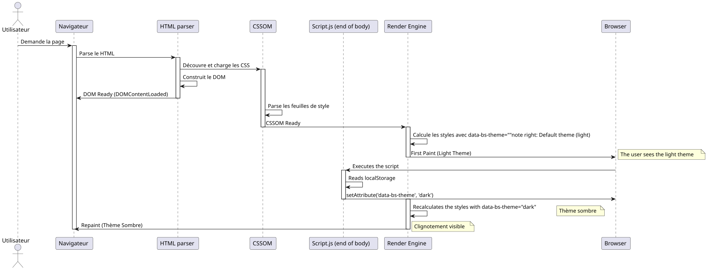

The Art of Preloading: Eliminate the "Flash" of Theme with JavaScript and CSS
Published on 15 November 2025
summary
In this in-depth technical article, we explore how to implement a theme selector (light/dark) without the unpleasant flickering effect that occurs during page load. We analyze in detail the browser rendering cycle, the root causes of FOUC (Flash of Unstyled Content), and propose a robust solution based on synchronous preloading in the`<head>`. This technique ensures a smooth and professional user experience.
The Problem: This Damned Theme Flicker
A Nightmare for the User Experience
Imagine the scene: you have spent hours designing a beautiful dark theme for your web application. The colors are perfectly balanced, the contrast is optimal, and your users love this option. But there is an embarrassing problem: on every page reload, for a fraction of a second, the default light theme flashes before the dark theme takes over.
This visual "flash", although brief (sometimes less than 100 ms), is immediately perceptible by the human eye and creates an unpleasant experience. For users who have chosen the dark theme for visual comfort or accessibility reasons, this flickering can even be painful, especially in a dimly lit environment.
The FOUC: An Old Web Problem
This phenomenon is a variant of what is called the "Flash of Unstyled Content" (FOUC), a classic web development problem dating back to the early days of CSS. FOUC occurs when the browser temporarily displays HTML content without its CSS styles applied, creating a flash of unstyled content.
In our specific case, we are not talking about completely unstyled content, but rather anFlash of Wrong Theme(FOWT) - the content is styled, but with the wrong theme. This is especially frustrating because it shows that our application "forgets" the user’s preference on every page load.
Impact on Quality Perception
This problem, although technical, has significant repercussions on the perception of the quality of your application:
Lack of polish: The flickering gives the impression of an unfinished or poorly optimized application. Users often associate these small visual flaws with a general lack of professionalism.
Break of coherenceThe application seems to "forget" the user’s preferences, creating a feeling of desynchronization between the interface and expectations.
Visual fatigue: For users sensitive to light or suffering from migraines, this bright flash can be more than just an aesthetic inconvenience.
Perceived performanceIronically, even if your site loads quickly, this blinking can give the impression of a slow or unresponsive application.
Technical analysis of the problem
To understand how to fix this problem, you first need to understand why it occurs. The flickering occurs due to a timing mismatch between three critical events in a web page’s lifecycle:
-
The initial parsing of HTML: The browser reads and analyzes the structure of your page
-
The application of CSS styles: The browser applies the CSS rules and calculates the visual rendering
-
The execution of the JavaScript: Your theme-changing code is executing
The problem occurs when event #3 (JavaScript execution) arrives after the browser has already started or finished event #2 (applying styles). At that point, the browser has already decided which theme to display, and your code arrives too late to influence it before the first render.
Why a Classic Script Isn’t Enough?
The Intuitive but Ineffective Approach
The most natural approach for a developer would be to place a script at the end of our`<body>`who checks the user’s preferred theme and applies it. This approach follows traditional web best practices that recommend loading scripts at the end of the page to avoid blocking rendering.
// À la fin de <body> - L'APPROCHE INSUFFISANTE
document.addEventListener('DOMContentLoaded', () => {
const theme = localStorage.getItem('preferred-theme');
if (theme === 'dark') {
document.documentElement.setAttribute('data-bs-theme', 'dark');
}
});Looks logical at first glance. We wait for the DOM to be ready, then we apply the theme. Simple, right? Unfortunately, this simplicity hides a fundamental flaw related to the timing of the browser’s rendering cycle.
Understanding the DOMContentLoaded event
The event`DOMContentLoaded`triggers when the initial HTML document has been completely loaded and parsed by the browser,without waitingthe end of loading style sheets, images and subframes. It’s an important point to understand.
Here is the typical sequence of events:
-
The browser starts downloading the HTML
-
It analyzes the HTML as it is received
-
He discovers the tags`<link>`for the CSS and starts to download them
-
He discovers the tags`<script>`and executes them (according to their type and attributes)
-
It builds the DOM (Document Object Model)
-
The event
DOMContentLoadedis triggered -
He continues to apply the styles and to do the layout
-
The first paint (display) occurs
-
The event`load`triggers when all resources are loaded
The problem? Between step 6 (DOMContentLoaded) and step 8 (first paint), the browser has already decided how to display the page. If your theme-changing script runs at step 6, it’s already too late to avoid an initial rendering with the default styles.
The Render Blocking Problem
In reality, timing is even more complex. Modern browsers use sophisticated optimization techniques to improve perceived performance. They try to make the first paint (First Contentful Paint) as fast as possible so the user sees something on screen.
CSS are "render-blocking" by default, which means the browser waits until it has downloaded and parsed the style sheets before doing the first paint. This makes sense: we don’t want to display unstyled content.
Here’s the catch: when the browser applies these CSS styles for the first time, it does so based on the current state of the DOM. If the attribute`data-bs-theme`is not yet set on the tag`<html>`, the browser will apply the default styles (usually the light theme).
Next, when your script runs and changes this attribute, the browser must:
-
Recalculate all styles affected by this change
-
Redo the layout if necessary
-
Repaint the affected elements
This process of recalculation and repainting is what causes the visible flicker.
Visualization of the Problem
To better understand this problematic sequence, let’s examine a detailed sequence diagram :

This diagram clearly illustrates the problem: the first paint occurs before our script has had a chance to set the correct theme. The subsequent repaint creates the visible flicker.
Ineffective Solution Attempts
Several approaches have been attempted to solve this problem, but most have their own drawbacks:
Approach 1: Hide content until loading
body {
opacity: 0;
transition: opacity 0.3s;
}
body.loaded {
opacity: 1;
}This approach hides all content until JavaScript sets the correct theme. The problem? It artificially delays content rendering, making the site feel slower. Moreover, if JavaScript is disabled, the user sees nothing at all!
Approach 2: Use a loader/spinner
Similar to approach 1, but with a loading spinner. This masks the problem but does not improve actual performance and adds an unnecessary perceived delay.
Approach 3: Default to dark theme
Some developers set the dark theme as the default in CSS. This avoids flickering for dark theme users, but creates the opposite problem for light theme users!
None of these approaches is satisfactory because they treat the symptom rather than the root cause of the problem.
The Real Solution: Act Sooner
The key to solving this problem is to realize that we need to define the attribute`data-bs-theme` beforethat the browser does not start applying CSS styles. This means that our script must run earlier in the page lifecycle, and that’s exactly what we will explore in the next section.
The Solution: Early Loading (Early Loading)
The Fundamental Principle
The elegant solution to our flickering problem is based on a simple yet powerful principle:synchronize the application state with the browser’s rendering process. Instead of waiting for the page to load to set the theme, we must set itduringthe loading, even before the CSS styles are applied.
This approach is called "Early Loading" or "Synchronous Preloading" in web development jargon. The idea is to execute our theme detection logic as early as possible in the page lifecycle, ideally in the tag`<head>`, before the browser even starts downloading the CSS files.
Why the <head> is the ideal place
Le `<head>`An HTML document is processed sequentially by the browser, from top to bottom. Each element is processed in the order it appears. This feature is crucial for our solution.
When the browser encounters a tag`<script>`in the`<head>`without the attributes`async` ou defer, il :
-
Interrupts the parsing of the HTML
-
Download the script(if external) or the bed (if inline)
-
Execute the script immediately
-
Resumes parsing the HTML
This behavior, often considered a performance problem (hence the usual recommendation to place scripts at the end of the page), becomes our ally in this case. By placing our theme detection script at the beginning of`<head>`, we guarantee that it runs before the browser encounters the tags`<link>`of our style sheets
Architecture of the Solution in Three Layers
Our complete solution consists of three interdependent layers, each playing a specific role:
Layer 1 : Persistence (localStorage) This layer is responsible for saving and retrieving the user’s choice between sessions.
Layer 2: Early Synchronization (Inline script in <head>) This layer synchronizes the application state with the DOM before the initial render.
Layer 3: Responsive Styles (CSS with attribute selectors) This layer defines the visual styles based on the state defined by layer 2.
Now let’s explore each layer in detail.
Step 1: Save the User’s Choice
localStorage: Your Persistent Memory
Le localStorage`is a Web Storage API that allows storing key-value pairs in the browser persistently. Unlike cookies, the data of`localStorage(Empty)
-
Never sent automatically to the server
-
Have a larger storage capacity (typically 5-10MB)
-
do not have an expiration date (persistent until explicit deletion)
-
Are limited to the protocol and the domain (Same-Origin Policy)
For our use case, the`localStorage`is perfect because:
-
We do not need to share this information with the server
-
We want the preference to persist indefinitely.
-
The required storage size is minimal (a few bytes)
Implementation of the Theme Backup
Here’s how we save the user’s choice when they change the theme:
// Fonction complète pour changer le thème
function setTheme(newTheme) {
// Validation de l'entrée
if (!['light', 'dark', 'auto'].includes(newTheme)) {
console.error('Thème invalide:', newTheme);
return;
}
try {
// Sauvegarde dans localStorage
localStorage.setItem('preferred-theme', newTheme);
// Application immédiate dans le DOM
document.documentElement.setAttribute('data-bs-theme', newTheme);
// Dispatch d'un événement personnalisé pour notifier d'autres composants
window.dispatchEvent(new CustomEvent('theme-changed', {
detail: { theme: newTheme }
}));
console.log('Thème changé:', newTheme);
} catch (error) {
console.error('Erreur lors de la sauvegarde du thème:', error);
// Fallback : on applique quand même le thème visuellement
document.documentElement.setAttribute('data-bs-theme', newTheme);
}
}
// Exemple d'utilisation avec un bouton
document.getElementById('theme-toggle').addEventListener('click', () => {
const currentTheme = document.documentElement.getAttribute('data-bs-theme') || 'light';
const newTheme = currentTheme === 'light' ? 'dark' : 'light';
setTheme(newTheme);
});Management of Error Cases
It is crucial to manage the cases where the`localStorage`is not available or accessible. Several scenarios may prevent access to`localStorage` :
Strict private navigationSafari in private browsing mode raises an exception`QuotaExceededError`during writing attempts in the`localStorage`.
Privacy settingsSome browsers or privacy extensions may block access to the`localStorage`.
Domain limitations : Le `localStorage`is not accessible on the protocol`file://`in some browsers.
Storage space saturatedAlthough rare, storage space can be completely filled.
That’s why our code uses a block`try…catch`to handle these cases gracefully, while continuing to offer the theme-switching functionality even if persistence is not available.
Advanced Persistence Strategies
For more sophisticated applications, you may consider additional strategies:
Server synchronization (optional)
async function setTheme(newTheme) {
// Sauvegarde locale immédiate
localStorage.setItem('preferred-theme', newTheme);
document.documentElement.setAttribute('data-bs-theme', newTheme);
// Synchronisation serveur en arrière-plan (si l'utilisateur est connecté)
if (userIsAuthenticated()) {
try {
await fetch('/api/user/preferences', {
method: 'POST',
headers: { 'Content-Type': 'application/json' },
body: JSON.stringify({ theme: newTheme })
});
} catch (error) {
console.warn('Échec de la synchronisation serveur:', error);
// L'échec n'est pas critique car la préférence est déjà sauvegardée localement
}
}
}This approach allows synchronizing preferences between devices for signed-in users, while keeping immediate local responsiveness.
Step 2: The Preload Script in the `<head>
The Heart of the Solution
This is where the magic truly happens. We are going to place a small scriptinlinedirectly in our`<head>`, before all our tags`<link>`of style sheets. This script is intentionally minimalist, standalone, and designed to run as quickly as possible.
<!DOCTYPE html>
<html lang="fr">
<head>
<meta charset="UTF-8">
<meta name="viewport" content="width=device-width, initial-scale=1.0">
<title>Mon Site Incroyable</title>
<!-- ==========================================
NOTRE SCRIPT MAGIQUE DE PRÉ-CHARGEMENT
Ce script DOIT être le premier élément
dans le <head> après les meta tags
========================================== -->
<script>
// IIFE pour ne pas polluer le scope global
(function() {
'use strict';
try {
// Lecture de la préférence sauvegardée
const savedTheme = localStorage.getItem('preferred-theme');
// Si une préférence existe, on l'applique immédiatement
if (savedTheme) {
document.documentElement.setAttribute('data-bs-theme', savedTheme);
}
// Optionnel : Détecter la préférence système si aucune sauvegarde
else if (window.matchMedia && window.matchMedia('(prefers-color-scheme: dark)').matches) {
document.documentElement.setAttribute('data-bs-theme', 'dark');
}
// Sinon, le thème par défaut du CSS sera utilisé (généralement 'light')
} catch (error) {
// En cas d'erreur (localStorage bloqué, etc.), on log discrètement
// et on laisse le thème par défaut s'appliquer
console.warn('Impossible de charger la préférence de thème:', error);
}
})();
</script>
<!-- FIN DU SCRIPT MAGIQUE -->
<!-- Les feuilles de style sont chargées APRÈS le script -->
<link rel="stylesheet" href="css/bootstrap.min.css">
<link rel="stylesheet" href="css/styles.css">
<!-- Autres ressources du head -->
<link rel="icon" href="favicon.ico">
</head>
<body>
<!-- Contenu de la page -->
</body>
</html>Script Anatomy: Every Line Counts
Let’s dissect this script line by line to understand each design decision:
The IIFE (Immediately Invoked Function Expression)
(function() {
// ...
})();This structure creates a function that is executed immediately. Why? To isolate our variables in a local scope and avoid polluting the global scope. Even if we only use`const`(which has a block scope), the IIFE is a good practice that makes our intentions clear and protects against potential name conflicts.
The Strict Mode
'use strict';This directive activates JavaScript strict mode, which: - Prohibits the use of undeclared variables - Generates errors for dangerous operations - Improves performance in certain JavaScript engines
For a critical script like this, we want maximum security.
The try…catch block
try {
// Code principal
} catch (error) {
console.warn('Impossible de charger la préférence de thème:', error);
}This block is absolutely crucial. It ensures that if something goes wrong (localStorage blocked, unlikely syntax error, etc.), our script will not block the loading of the entire page. The use of`console.warn`rather than`console.error`indicates that it is a non-critical problem.
Reading the localStorage
const savedTheme = localStorage.getItem('preferred-theme');This line may throw an exception in some contexts (Safari’s strict private browsing). That’s why it is in a try…catch block.
The Conditional Application
if (savedTheme) {
document.documentElement.setAttribute('data-bs-theme', savedTheme);
}We apply the theme only if we found a saved one. Otherwise, we let the CSS use its default theme. This approach is more robust than a hard-coded default value in the JavaScript.
Detection of the System Preference (Bonus)
An optional but elegant improvement consists of detecting the user’s operating system theme preference if they have not yet made an explicit choice in your application :
else if (window.matchMedia && window.matchMedia('(prefers-color-scheme: dark)').matches) {
document.documentElement.setAttribute('data-bs-theme', 'dark');
}This feature uses the Media Query`prefers-color-scheme`to query the system. On macOS, Windows 10+, iOS, and modern Android, this query returns the user’s system preference.
Advantages: - Personalized experience from the first visit - Consistency with the user’s system environment - No storage required for the first visit
Considerations : - Not all browsers support this feature (but support has been excellent since 2020) - The verification`window.matchMedia`ensures compatibility - The user can always override this choice
Performance: Why this Script is fast
Our pre-loading script is designed to be extremely fast:
Minimal sizeApproximately 300 bytes uncompressed, 200 bytes minified. It’s negligible compared to any image or JavaScript library.
Inline: No additional HTTP request. The script is in the HTML, so it is immediately available.
Simple synchronous operations: Reading a key from localStorage (ultra-fast operation) and modification of a DOM attribute (native browser operation).
No dependency: No framework, no library, just vanilla JavaScript. No startup time, no dependency parsing.
Single execution: This script runs only once on load. No event listeners, no loops, no complex calculations.
In practice, on modern hardware, this script runs in less than 1 millisecond, an imperceptible time that has no impact on the page load performance.
Optimal placement in the `<head>
The order of the elements in the`<head>`is important. Here is the recommended order:
<head>
<!-- 1. Métadonnées critiques -->
<meta charset="UTF-8">
<meta name="viewport" content="width=device-width, initial-scale=1.0">
<!-- 2. Notre script de pré-chargement (IMMÉDIATEMENT après les meta) -->
<script>
(function() { /* notre code */ })();
</script>
<!-- 3. Titre de la page -->
<title>Mon Site</title>
<!-- 4. Feuilles de style -->
<link rel="stylesheet" href="styles.css">
<!-- 5. Autres ressources (fonts, favicons, etc.) -->
<link rel="preconnect" href="https://fonts.googleapis.com">
<link rel="icon" href="favicon.ico">
<!-- 6. Autres scripts avec defer ou async -->
<script src="app.js" defer></script>
</head>This order guarantees that:
-
The charset is defined before any text processing
-
Our script runs before the CSS loads
-
The CSS files are then loaded and directly apply the correct theme
-
Other non-critical resources are loaded last
Step 3: The Power of CSS Attribute Selectors
The Bootstrap 5 Theme System
Bootstrap 5 introduced an elegant theme management system based on CSS custom properties (CSS variables) and attribute selectors. This system uses the attribute`data-bs-theme`on the element`<html>`to determine which set of color variables to apply
The beauty of this system lies in its simplicity: instead of loading different stylesheets or toggling classes on thousands of elements, we simply change an attribute on a single element, and CSS does the rest thanks to the cascade.
CSS Structure for a Theme System
Here is a complete CSS structure for implementing a robust theming system:
/**
* SYSTÈME DE THÈME COMPLET
* Utilise les Custom Properties CSS pour une maintenance facile
*/
/* ============================================
THÈME PAR DÉFAUT (LIGHT)
Défini sur :root pour être le fallback
============================================ */
:root {
/* Couleurs de base */
--color-primary: #0d6efd;
--color-secondary: #6c757d;
--color-success: #198754;
--color-danger: #dc3545;
--color-warning: #ffc107;
--color-info: #0dcaf0;
/* Couleurs de fond */
--bg-primary: #ffffff;
--bg-secondary: #f8f9fa;
--bg-tertiary: #e9ecef;
/* Couleurs de texte */
--text-primary: #212529;
--text-secondary: #6c757d;
--text-tertiary: #adb5bd;
/* Couleurs de bordure */
--border-color: #dee2e6;
--border-color-subtle: #e9ecef;
/* Couleurs d'ombre */
--shadow-sm: rgba(0, 0, 0, 0.075);
--shadow-md: rgba(0, 0, 0, 0.15);
--shadow-lg: rgba(0, 0, 0, 0.25